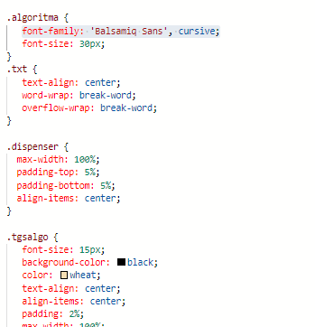
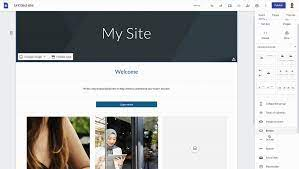

Google Sites adalah aplikasi wiki terstruktur untuk membuat situs web pribadi maupun kelompok, untuk keperluan personal maupun korporat. Google Sites disiapkan sebagai pengganti dari Google Page Creator.
Google Sites adalah aplikasi atau website yang dibuat oleh Google sendiri untuk membuat website. Biasanya website dibuat dengan menggunakan coding, seperti HTML dan CSS.
Tapi dengan bantuan Google Sites, kita dapat membuat web tanpa menggunakan coding html dan css, hanya mengedit nya seperti beberapa software edit video yang simple dan tidak menggunakan coding. Dengan tampilan yang memudahkan, dapat membantu kita untuk membuat web tanpa pengetahuan mengenai HTML maupun CSS.
